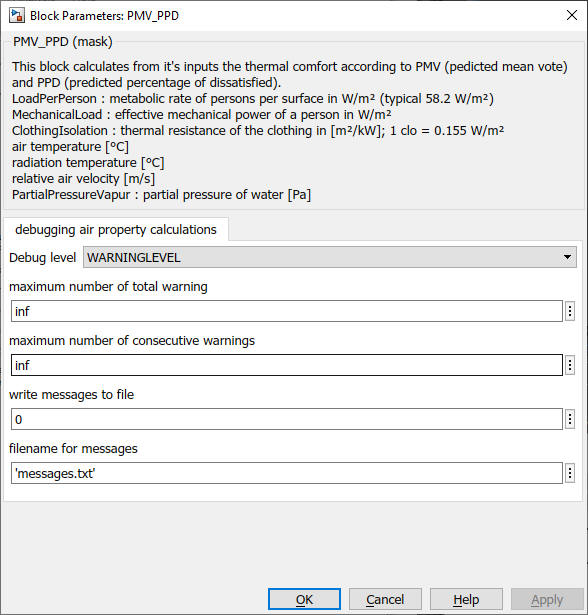

PPD_PMV
Path: CARNOT/Outputs/Comfort
Purpose:
This block calculates from it's inputs the thermal comfort rating PMV
(pedicted mean vote) and PPD (predicted percentage of dissatisfied).
Description:
This block calculates from it's inputs the thermal comfort rating PMV
(pedicted mean vote) and PPD (predicted percentage of dissatisfied)
according to ISO 7730. For details see
calculate_ppd.m and calculate_pmv.m
Metabolic rates from ISO 7730 : The metabolic rate is the thermal power emission per surface with 1 met = 58,2 W/m2.
| standing / leaned | : | 46 W/m2 = 0.8 met |
| sitting relaxed | : | 58.2 W/m2 = 1.0 met |
| sitting activity (office, school) | : | 70 W/m2 = 1.2 met |
| standing, light activity (shopping, lab, light work) |
: | 93 W/m2 = 1.6 met |
| standing, average activity (sales, household, machine operator) |
: | 116 W/m2 = 2.0 met |
| walking (horizontal plane) | : | 2 km/h : 110 W/m2 = 1.9 met 3 km/h : 140 W/m2 = 2.4 met 4 km/h : 165 W/m2 = 2.8 met 5 km/h : 200 W/m2 = 3.4 met |
The clothing isolation is defined as a thermal resistance with
1 clo = 0.155 m2*K/W
.
See ISO 7730 and [Smallcombe et.al. 2021] for details.
The result of the PMV is in 7 categories :
| +3 | : | hot |
| +2 | : | warm |
| +1 | : | slightly warm |
| 0 | : | neutral |
| -1 | : | slightly cool |
| -2 | : | cool |
| -3 | : | cold |
Input:
| LoadPerPerson | : | metabolic rate [W/m2], valid range 46 W/m2 to 232 W/m2 (0,8 met bis 4 met) |
| MechanicalLoad | : | work = effective mechanical power [W/m2] |
| ClothingIsolation | : | clothing isolation in [m2*K/W], valid range 0 m2*K/W to 0,310 m2*K/W (0 clo bis 2 clo) |
| AirTemperature | : | air temperature [°C], valid range 10 °C to 30 °C |
| RadiationTemperature | : | mean radiation temperature [°C]; 10 °C to 40 °C |
| AirVelocity | : | air velocity [m/s]; valid range 0 m/s to 1 m/s |
| PartialPressureVapour | : | partial pressure of water vapour [Pa], valid range 0 Pa to 2700 Pa |
Output:
| PMV | : | Predicted Mean Vote (-3 .. +3) |
| PPD | : | Percentage of People Dissatiesfied in % |
| ClothingTemperature | : | clothing temperature (surface) in °C |
Parameters and Dialog Box:

Examples:
Open the example explorer from the Matlab command window
ExampleBrowser
or load the examples via the CARNOT library.
Literature:
ISO 7730 : Ergonomics of the thermal environment – Analytical determination
and interpretation of thermal comfort using calculation of the PMV and PPD
indices and local thermal comfort criteria (ISO 7730:2005)
James W. Smallcombe, Simon Hodder, Kalev Kuklane, Magdalena Młynarczyk, Dennis
Loveday, Jakob Petersson, Amitava Halder, George Havenith : Updated Database
of Clothing Thermal Insulation and Vapor Permeability Values of Western
Ensembles for Use in ASHRAE Standard 55, ISO 7730, and ISO 9920,
ASHRAE Transactions, Volume 127, Part 1, 2021
NOTE:
The room and building models of Carnot are not able to deliver all necessary data
for this block. Use the block only in combination with other data sources. The
detailed room model of Carnot doesn't have the air velocity. A valid choice for
this value is required.
Characteristics:
| Direct Feedthrough | : | Yes |
| Sample Time | : | Inherited from driving block |
| Vectorized | : | No |